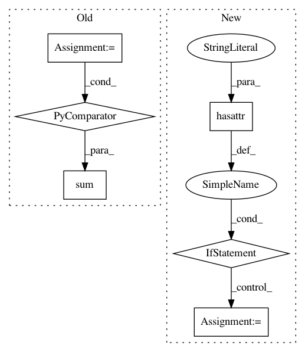

e4e46b6df6c4804b73dc07faebb9bdfabd7036c6,spynnaker/pyNN/models/common/eieio_spike_recorder.py,EIEIOSpikeRecorder,get_spikes,#EIEIOSpikeRecorder#Any#Any#Any#Any#Any#Any#Any#Any#,64
Before Change
placement = placements.get_placement_of_vertex(vertex)
vertex_slice = graph_mapper.get_slice(vertex)
n_buffer_times = sum(len(i) for i in vertex.send_buffer_times)
// Read the spikes
if (n_buffer_times > 0):
raw_spike_data, data_missing = \
buffer_manager.get_data_by_placement(placement, region)
After Change
n_buffer_times = 0
if vertex.send_buffer_times is not None:
for i in vertex.send_buffer_times:
if hasattr(i, "__len__"):
n_buffer_times += len(i)
else:
// assuming this is must be a single integer
n_buffer_times += 1
if (n_buffer_times > 0):
raw_spike_data, data_missing = \
buffer_manager.get_data_by_placement(placement, region)
if data_missing:
In pattern: SUPERPATTERN
Frequency: 3
Non-data size: 6
Instances
Project Name: SpiNNakerManchester/sPyNNaker
Commit Name: e4e46b6df6c4804b73dc07faebb9bdfabd7036c6
Time: 2019-11-08
Author: andrew.gait@manchester.ac.uk
File Name: spynnaker/pyNN/models/common/eieio_spike_recorder.py
Class Name: EIEIOSpikeRecorder
Method Name: get_spikes
Project Name: cornellius-gp/gpytorch
Commit Name: e5a3f2208cc837f75ef312b4bd8b87ea59827bdc
Time: 2018-02-27
Author: gpleiss@gmail.com
File Name: gpytorch/models/abstract_variational_gp.py
Class Name: AbstractVariationalGP
Method Name: marginal_log_likelihood
Project Name: keras-team/keras
Commit Name: cab77c8f23bf81eaa06aeeeb28a4da3b716f7bd7
Time: 2017-10-25
Author: julien.rebetez@gmail.com
File Name: keras/utils/layer_utils.py
Class Name:
Method Name: print_summary